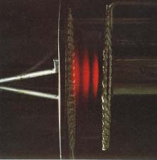

From Leybold catalog, purchased from Klinger-Educational Products,112-19 14th Road,College Point, New York 11356, Ph718-461-1822 |
When the accelerated electrons excite the electrons in neon to upper states, they de-excite in such a way as to produce a visible glow in the gas region in which the excitation is taking place. There are about ten excited levels in the range 18.3 to 19.5 eV. They de-excite by dropping to lower states at 16.57 and 16.79 eV. This energy difference gives light in the visible range. Since the accelerated electrons undergo inelastic collisions with the neon and are then accelerated again, they can undergo a series of such collisions if the accelerating voltage is high enough. Since the accelerating voltage from the Franck-Hertz console can reach about 80 volts, you can get up to four collisions. This can be seen under proper conditions as four bands of light from the de-excitation in the collison regions. |